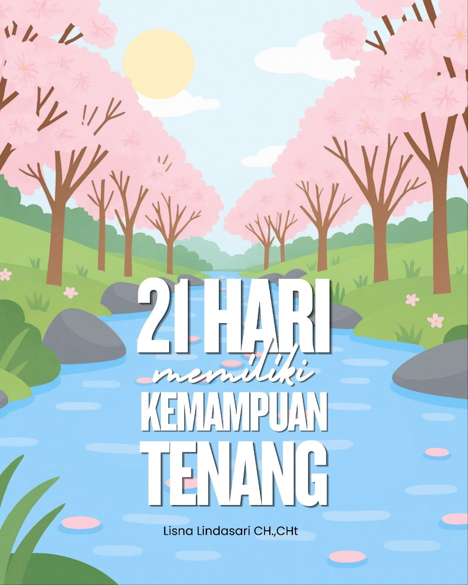
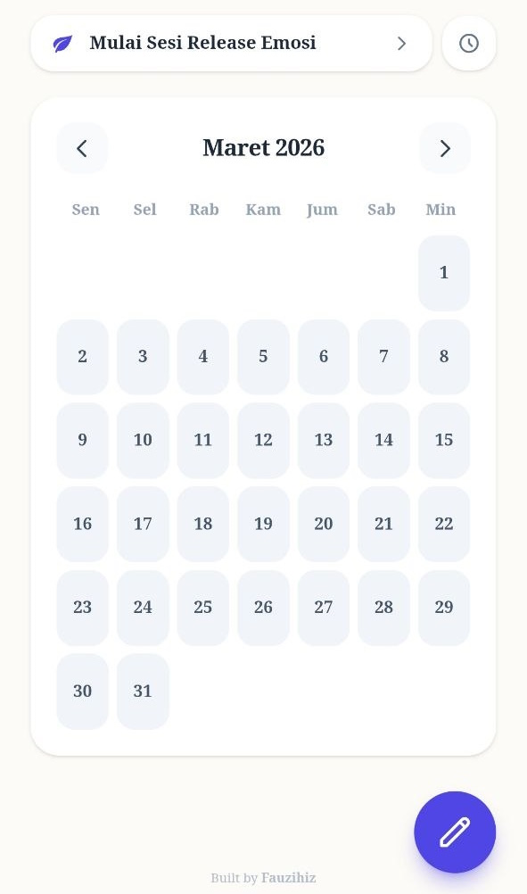
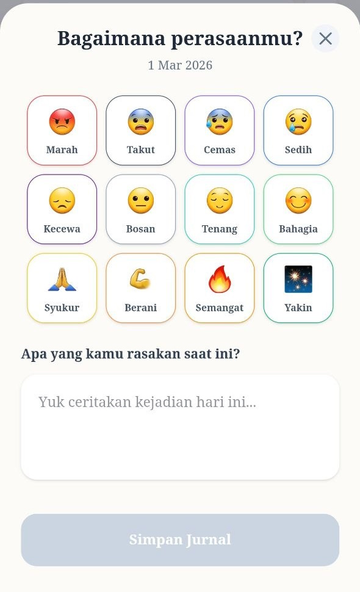
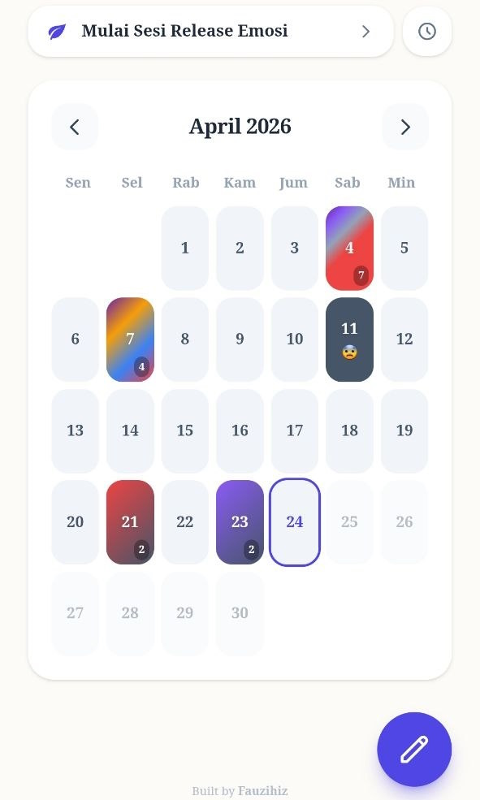
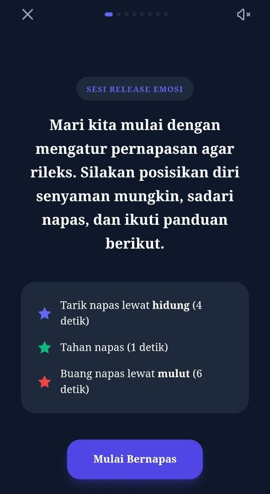

Ketenangan bukanlah sebuah bakat yang kita bawa sejak lahir, melainkan sebuah keterampilan yang bisa dilatih oleh siapa saja. Mungkin selama ini kamu merasa lelah karena emosi yang mudah terpancing, atau terjebak dalam pusaran overthinking yang tak kunjung usai. Kabar baiknya: Ketenangan bisa dilatih.
Dalam proses menjadi pribadi yang lebih tenang, langkah pertama adalah memahami emosi itu sendiri. Emosi adalah respon subjektif atas perjalanan masa lalu kita, baik secara psikologis maupun fisiologis. Karena sifatnya yang subjektif, ketenangan kita sangat bergantung pada bagaimana perspektif subjektif kita dalam melihat setiap kejadian.
Ketiga pilar tersebut dihubungkan oleh sebuah instrumen yang sangat nyata dalam tubuh kita, yaitu nafas. Nafas bukan hanya tanda kehidupan, melainkan alat kontrol utama untuk menenangkan sistem saraf dan menjernihkan pikiran kita seketika.
Kesehatan mental yang sejati bukan berarti kita tidak pernah merasa sedih, marah, atau kecewa. Sebaliknya, orang yang sehat secara mental adalah mereka yang terampil "menjamu" perasaan-perasaan tersebut dan mengelolanya dengan kesadaran penuh. Kemampuan untuk tetap tenang di tengah badai perasaan inilah yang menjadi kunci utama.
Lebih dari sekadar untuk kenyamanan diri sendiri, keterampilan mengelola emosi adalah warisan yang tak ternilai. Bagi seorang perempuan, kemampuan ini jauh lebih krusial karena kita mewariskan kondisi sistem saraf kita kepada anak-anak kita kelak. Kemampuan untuk tetap tenang adalah hadiah terbaik yang bisa kita berikan untuk masa depan generasi selanjutnya.
Hidup ini memang penuh dengan ujian, namun yang menentukan kualitas hidup kita bukanlah besarnya badai, melainkan bagaimana kita meresponnya. Seringkali kita merasa lelah karena mencoba mengendalikan hal-hal yang di luar jangkauan kita.
Padahal, ketenangan sejati dimulai saat kita mampu membedakan mana yang bisa kita ubah dan mana yang harus kita serahkan sepenuhnya kepada Allah. Fokuslah pada apa yang ada dalam kendalimu—pikiranmu, pilihanmu, dan caramu bersyukur—maka dunia di sekitarmu akan terasa lebih ringan.
Dalam perjalanan ini, mungkin ada luka-luka masa lalu yang belum sepenuhnya kering. Pemulihan bukanlah tentang melupakan segalanya seolah tidak pernah terjadi, melainkan belajar untuk hidup berdamai dengan setiap rasa yang pernah ada.
Bayangkan seperti sebuah pohon yang tetap tumbuh tinggi meski pernah diterpa badai hebat. Bekas dahan yang patah atau goresan pada batangnya justru menjadi tanda bahwa pohon tersebut sangat kokoh. Begitu juga dengan jiwa kita. Setiap bekas luka adalah bukti bahwa kita pernah berjuang dan berhasil bertahan, bahwa kita kuat.
Tegakkan kepalamu. Luka masa lalu adalah pupuk yang membuatmu tumbuh lebih kuat. Melangkahlah maju dengan penuh keyakinan sebagai pribadi yang lebih tangguh.
Emosi kita seringkali tidak ditentukan oleh apa yang terjadi, melainkan oleh "kacamata" yang kita gunakan untuk melihatnya. Inilah yang disebut Perspektif Subjektif.
Saat kacamata kita buram oleh kelelahan atau luka masa lalu, hal kecil bisa terasa seperti bencana besar. Namun, saat kita mampu menjernihkan perspektif, kita akan menyadari bahwa setiap kejadian pada dasarnya adalah hal yang netral. Dan kita sendirilah yang menentukan hal tersebut baik atau buruk untuk kita.
Untuk bisa mengubah perspektif di tengah emosi yang meluap, kita butuh sebuah "Jeda". Di sinilah peran keajaiban Nafas. Nafas adalah tombol reset alami yang Allah berikan untuk memutus rantai reaksi stres otomatis dalam tubuh kita.
Saat kita menyadari nafas, kita sedang menciptakan ruang antara kejadian dan respon. Dalam ruang itulah letak kebebasan kita untuk memilih ketenangan. Akar dari segala ketentraman bukanlah ketiadaan masalah, melainkan kemampuan kita untuk kembali pada nafas di tengah badai apa pun.
"Pain is inevitable, But suffering is your choice."
Ketenangan yang kokoh dibangun di atas pembiasaan yang konsisten. Dalam 21 hari ke depan, kita akan melatih diri melalui tiga cara yang saling melengkapi:
1 Teknik Nafas: Menenangkan sistem saraf.
2 Doa Afirmasi: Menanamkan keyakinan positif.
3 Jurnal Emosi: Mengurai perasaan.
1. Clarity: Niat yang jelas. Niatkan segala sesuatu karena Allah, agar menjadi hamba yang baik.
2. Intensity: Sepenuh rasa, sepenuh jiwa.
3. Consistency: Konsisten. Jangan terburu-buru melihat hasil. Orang yang gagal karena terlalu cepat berhenti.
Secara ilmiah, otak kita membutuhkan waktu untuk membentuk jalur saraf (neural pathways) baru. Penelitian oleh Dr. Maxwell Maltz menunjukkan bahwa 21 hari adalah ambang batas minimal bagi sistem saraf pusat untuk mulai menerima perubahan sebagai "normalitas baru".
Dengan berlatih secara konsisten selama 21 hari, Anda sedang melatih otak untuk beralih dari respon stres otomatis menuju respon ketenangan yang sadar.
Metode 4-1-6:
Tarik nafas 4 detik,
Tahan 1 detik,
Hembuskan nafas 6 detik.
Lakukan teknik ini setiap kali Anda merasa emosi mulai tidak terkendali.
Bacalah doa-doa afirmasi ini dengan sepenuh rasa dan jiwa setiap kali bangun tidur, setelah shalat, dan sebelum tidur untuk menanamkan ketenangan ke dalam pikiran bawah sadar Anda.
"Aku menerima semua jenis manusia yang hadir dalam hidupku, aku menerima semua warna warni peristiwa yang ada dalam kehidupanku, dalam wujud dan bentuk apa saja, dengan sepenuh rasa syukurku kepada Allah."
"Aku terima semua jenis rasa yang hadir dalam perasaanku saaat ini, aku terima rasa tidak nyaman ini, sebab aku memahami, hadirnya rasa tidak nyaman yang aku rasakan saat ini, adalah sebuah kejadian yang alami, itulah kenapa aku disebut sebagai manusia..."
"Sebab aku mengerti sekarang, apapun rasa dan warna peristiwa yang hadir dalam kehidupanku, semuanya bertujuan untuk meperindah, dan mengubah hidupku..."
"Sebab aku menyadari sekarang, ini hanya sementara, semua ini tidak ada yang abadi, semua pasti berlalu, semua pasti berganti..."
"Entah kenapa, mulai saat ini, aku mudah untuk berdamai, dengan segala jenis manusia, segala macam masalah, dan peristiwa..."
"Itulah kenapa aku sekarang menjadi pribadi yang damai, pribadi yang mudah berdamai dengan diri sendiri, sehingga aku merasa damai sekarang, aku tenang sekarang, aku ikhlas sekarang, aku bahagia sekarang..."
"Saya bersyukur dengan masalah yang saya hadapi saat ini, sebab dengan adanya masalah ini, derajat kemanusiaan dan kesadaran saya terus bertambah semakin tinggi lagi..."
"Terima Kasih Ya Allah, atas warna-warni masalah hidup yang telah engkau hadirkan kepada saya saat ini, izinkan saya agar dapat mengambil pelajaran penting dari masalah hidup saya saat ini sebagai bekal saya menjalani kehidupan nanti..."
"Terimakasih Ya Allah, Aku TENANG sekarang..."
"Ya Allah, terimakasih atas anugerah kehidupan ini... Atas semua hal yang pernah kuterima di masa lalu, yang kuterima saat ini, dan atas semua hal yang akan kuterima nanti."
"Aku bersyukur...
Aku damai dengan diriku sendiri...
Aku ikhlas dengan hidupku saat ini...
Aku tenang dengan kondisiku saat ini...
Aku bahagia dengan apapun keadaanku saat ini..."
Panduan menggunakan aplikasi jurnal emosi untuk membantu mengurai perasaan yang dialami:

Ini adalah tampilan utama aplikasi jurnal emosi. Ketika kita merasakan sebuah emosi dan ingin mencatatnya di jurnal, kita bisa mengklik sesuai tanggal kapan waktu kejadian, atau kalau terjadi pada hari ini, bisa klik langsung pada tombol di kanan bawah.

Kamu tinggal memilih emosi apa yang sedang dirasakan lalu tulis dan ceritakan momen apa yang terjadi sehingga kamu merasakan emosi tersebut.

Setelahnya kamu akan dikembalikan ke halaman utama, di sana kamu akan melihat campuran warna perasaan yang terjadi pada hari-hari mu, sehingga kamu dapat mengevaluasi bagaimana perasaan emosi selama ini.

Pada tampilan utama, terdapat menu atau tombol di atas bertuliskan "Mulai Sesi Release Emosi". Dengan menekan tombol ini kamu akan diarahkan ke sesi release emosi.
"Semoga perjalanan 21 hari ini menjadi langkah awal bagimu untuk menemukan ketenangan yang sejati."
Teruslah berproses dengan penuh kesabaran, karena setiap langkah kecilmu menuju kedamaian sangatlah berarti. Sampai jumpa di versi dirimu yang lebih damai, lebih lega, dan lebih bahagia.